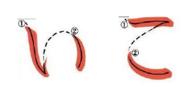
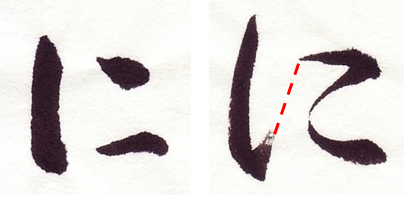
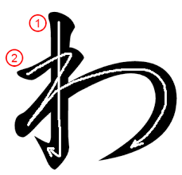
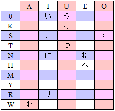
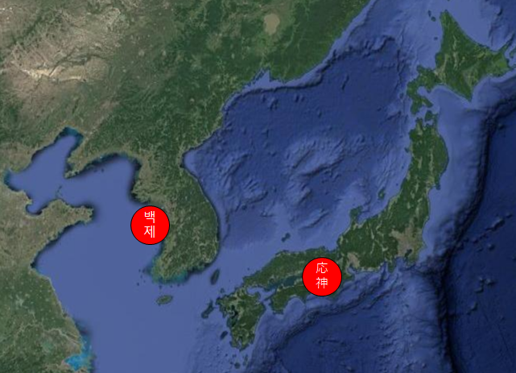
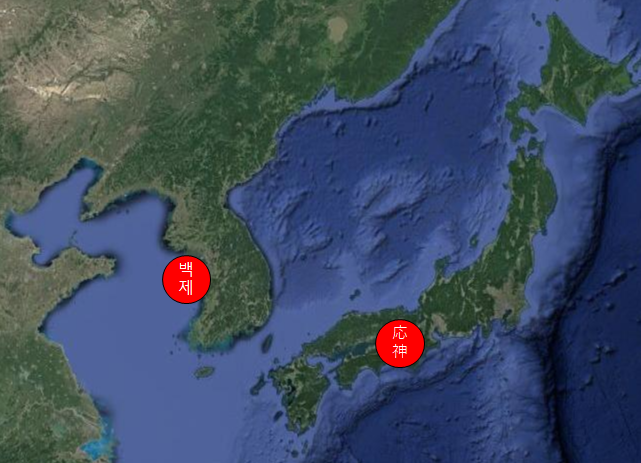

Introduction to the Japanese Syllaberies
This week we are going to learn six new syllabules and 12 total characters. These
were selected because many of the same share the same strokes. You will learn these
together to make it easier to tell them apart in the future. This is really good news.
There are less than 100 kana, so after this week you will be one quarter done!
Looking at these characters you will see that they have the same sorts of hooks on
some ends. These are left over from the way the brush is held and the direction of
each stroke. As we saw with い the little hook occurs as the brush returns to the
top and is lifted away. KO こ and NI に have a similar hook caused as the brush drifts
between strokes. If someone draws NI with a very light brush it can almost look like
three dots. A heavier hand can almost connect everything. WA is really a zig-zag over
the line, but sometimese it is written as if the strokes were separate. This is just
a difference in handwriting. Any Japanese reader can see the strokes and recognize the
kana as long as you write them in the right order.

So far we have only learned 11 of the kana. You can see where they fit into this chart
which we will update from time to time. For the most part we are practicing the kana
that are the most frequent. So, once you learn these you will probably be able to read
many words. In just a few more weeks you will be able to read almost every word.

The Story of Wani
 
Around the year 400 AD, before Japan had contact with China and before there were any kanji,
the Japanese had their own language and their own Emperor Ōjin (応神) who lived in Osaka. Not
too far across the Yellow Sea was the Korean kingdom of Baegje (백제). Baegje was a sea-faring
people and they were pressed on two land borders by enemy Korean nations. In order to gain a
military ally, Baegje sent gifts to Emperor Ōjin, especially a scholar and ambasador, Achiki (아치키 or あちき).
Among the gifts were two horses and Achiki kept them in a stable on a hill near Osaka.

Around the year 400 AD, before Japan had contact with China and before there were any kanji,
the Japanese had their own language and their own Emperor Ōjin (応神) who lived in Osaka. Not
too far across the Yellow Sea was the Korean kingdom of Baegje (백제). Baegje was a sea-faring
people and they were pressed on two land borders by enemy Korean nations. In order to gain a
military ally, Baegje sent gifts to Emperor Ōjin, especially a scholar and ambasador, Achiki (아치키 or あちき).
Among the gifts were two horses and Achiki kept them in a stable on a hill near Osaka.
Achiki was known to study the words of Confucius and the emperor sent his son to study with him.
The emperor was even more impressed and he asked Achiki if there were other scholars. At Achiki's
word, the emperor dispatched a diplomatic mission to bring the greatest scholar: Wani (わに). Some
believe that Wani was actually Chinese and that the Chinese form of his name (王仁) is read as
Wang Ren. If so, he may have been a visitor to Baegje from China who went even further into a
far off land. Whatever the case, by the spring of that year, the delegation returned with Wani to
Osaka and Wani took up the tutelage of the prince. The delegation brought additional gifts from
Baegje: books of Confucius' teachings and a book of instruction in the Chinese characters. The
young prince became a well educated man and Achiki, Wani and the rest grew old with many descendants
among the Japanese.
Wani was not the only one who brought teachings from Korea to Japan, but he and Achiki were the
first. Others brought Buddhism to mix with Confucius, Chinese to mix with Korean, and metalurgy
to improve Japanese weapons. Baegje got the allies they wanted and Japan prospered from the
relationship.
Wani brought with him a library of the same Confucius Teachings that Achiki had learned. Confucius
(孔夫子 in Chines; 孔子 in Japanese) himself was a Chinese magistrate who lived almost a thousand
years before (~500BC). Confucius didn't think of himself as religious, and he would be surprised
to find anyone talking about Confucism as a religion. He simply felt that, unlike the kings and
princes of his day, there wasa right, good, or ethical way to rule. He put together a set of
statements that described the way (Tao タオ) that one should live. This started from personal control
and habit and could be elevated to the ideal government and governor. The Emperor Qin tried to stamp
out these teachings ~200BC, But the Han Dynasty lived by these teachings (Neo-Confucism) for many
years. As they migrated to Korea and later Japan,
they brought a common personal and political philosophy to all these nations. It wasn't until 1905
when the Chinese tried to rid themselves of Confucism in order to accept other "modern" philosophies.
Confucian Philosophy
Confuncian philosophy is based on a few key character traits. Much like Benjamin Franklin and George
Washington, Confucius was trying to idealize the traits of an upright and moral person.
Confucius' main goal was to achieve harmony with the rest of the universe. Because of his goal,
harmony is a critical concept in much of Eastern thought. Harmony also meant a natural state that
was not at odds with natural law. He thought of five relationships which exist in life and which
had to develop along harmonious lines. These are parent-child, elder-younger, husband-wife,
friend-friend, sovereign-subject. Starting with parent-child, each relaitonship had duties and
responsibilities on both sides. A person who lived this way saw his or her self in relation to all
those around. This brought on the first of the Confucian virtues: Compassion 慈悲.
Another key point of Confucian thought was that man was inherently good and that a properly trained
man would be full of virtue and goodness. The training of a child, subject, or subordinate in this
way is the first priority of the parent, sovereign, or leader. The right way to act may be called
ritual or Courtesy 現在 and it means that your behavior is always the most harmonious with those around
you. The best way to teach this was by example in your own life. In this way, a person who wishes
to preach Confucianism, must first espouse and practice it himself. Compassion and courtesy are
considered the highest virtues of heaven. Confucianism holds people without those virtues in contempt.
Other Confucian characteristics include Justice 正義 (doing the thing that is right), Wisdom 知恵
(knowing and understanding what is right), and sincerity 誠実 (believing in the right you do). By
having compassion and showing courtesy to others, one may come to believe what one does, grow in
wisdom, and live a just life. In many ways, what he taught is very good and completely harmonious
with what Jesus taught. While his teachings are not scripture to either the Japanese, or even the Chinese,
they have become engrained in the way the Japanese live. These are some of his sayings. How do you
think they affect Japanese culture today?
- Is not behaving with filial piety to one’s parents and siblings the root of Compassion?
- How do family relationships and behaviors in the family predict relationships in society?
- To be raised without teaching is the parents' fault.
- How does this compare with D&C 68:25?
- When your parents call you, answer them right away.
- Why is urgent obedience so important?
- A gentleman thinks of righteousness when faced with gain.
- Many people say that the "eastern" way is opposite to capitalism. Can you see why?
- To eat coarse food, drink plain water and pillow oneself on a bent arm - there is pleasure to be found in these things. But wealth and position gained through inappropriate means - these are to me like floating clouds.
- How would this compare with what you learn at church?
- If you yourself were not so greedy, the people could not be paid to steal.
- There are some people that say looting stores and stealing is justified by poverty. Does Confucius agree?
- Exemplary persons in making their way in the world are neither fixed on nor against anything; rather they go with what is appropriate.
- How does the concept of harmony enter here?